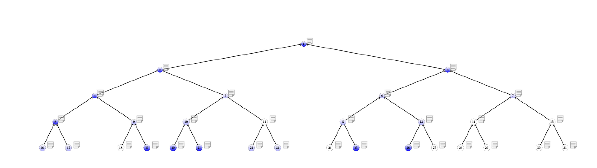

|
Character Tree
1.0.0
A PDF tree builder from CSV
|
|
Character Tree
1.0.0
A PDF tree builder from CSV
|
A simple PDF tree generator representing a genetic character in a family (like in a genealogic tree) from a formatted CSV file.
A LaTeX distribution, such as MikTeX or TexLive, have to be install on the targeted operatin system with the path to pdflatex set as an environment variables.
The CSV file has the following format:
Some macro can be change in the file treestruct.h.
| Macro | Default | Description |
|---|---|---|
| CSVSEP | ; | The values separator |
| CSVEOL | ;\n | The End Of Line separator |
| SRC | data.csv | The path to the CSV file |
The C code have to be recompiled after any modification. For the time being, the character-column values are limited to 0, 1 or 2.
In a terminal, run the command make or make all and the compiled PDF will be created in the current directory, named tree.pdf.
 
The developper documentation (along this file) can be generated with Doxygen as a website by running the command make docs. The created files can be found in ./docs/html.
© 2021 Bruno VERCHÈRE